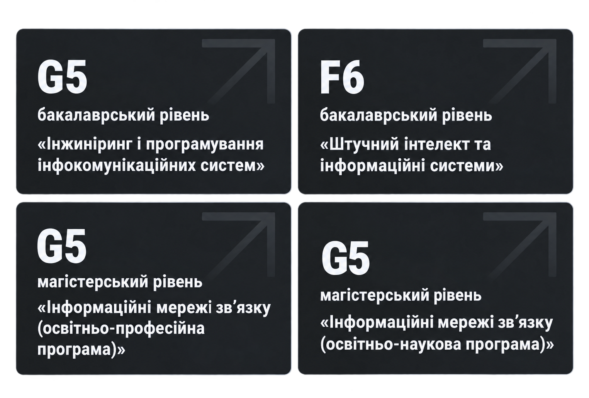

Вибери не просто освіту - обери шлях до свого технологічного майбутнього! Кафедра Інформаційно-
комунікаційних технологій імені О.О. Зеленського Національного аерокосмічного
університету "ХАІ" - це місце, де ідеї стають реальністю, а знання відкривають двері до кар’єри мрії.
Почни свій шлях вже сьогодні!
Наші спеціальності
Ми спеціалізуємось на підготовці фахівців галузі інформаційних технологій, електронних
комунікацій та інфокомунікаційних систем за напрямками "Інжиніринг і програмування інфокомунікаційних систем",
"Штучний інтелект та інформаційні системи", "Інформаційні мережі звʼязку" та
"Інформаційні мережі звʼязку".

Інформація про освітню програму спеціальності “Інжиніринг і програмування інфокомунікаційних систем”:
1 курс
1 семестр
Кредити
2 семестр
Кредити
Мовні компетентності (іноземна мова)
3.00
Іноземна мова
3.00
Українські студії
3.00
Формування системного наукового світогляду (за вибором)
3.00
Правова компетентність (на вибір)
3.00
Основні теорії кіл
4.00
Вища математика
5.00
Вища математика
5.00
Дискретна математика
5.00
Фізика
5.00
Основи інфокомунікації
5.00
Алгоритми і структури даних
4.00
Програмування на Python
4.50
Програмування на Python
4.50
Навчальна практика
3.00
Перший предмет "Основи інфокомунікації" розповість про цілі навчання освітньої програми, сучасні тенденції в
інфокомунікаціях і інформаційних технологіях, можливості та варіанти вашого розвитку. Як і в усьому ХАІ,
студент формує свою власну навчальну траєкторію вже на 1-му курсі за допомогою дисциплін за вибором: "Іноземна
мова", "Українські студії", "Гуманітарна або економічна дисципліна за вибором"
і "Правова компетентність за вибором". Вони розвивають у студентів так звані "м'які" навички (Soft Skills) і
полегшують весь процес навчання.
Фундаментальні курси "Вища математика", "Дискретна математика", "Фізика" формують основу для вивчення
подальших прикладних курсів. "Основи теорії кіл" почнуть знайомство з електронікою в цілому. Паралельно з
розвитком м'яких навичок і формуванням фундаменту для технічної частини, ми посилено викладаємо студентам
програмування. В "Основах програмування" вивчається мова програмування Python, інтегровані середовища розробки,
системи контролю версій, різні бібліотеки і інструменти. Python панує як мова програмування в даній освітній
програмі і практично у всьому навчальному процесі. "Алгоритми і структури даних" також розширюють знання і
розвивають навички в програмувані як розробника мережевих додатків, так і систем обробки даних. "Навчальна
практика" присвячується вивченню операційних систем на базі ядра Linux, що є основою для більності
інформаційних систем.
Наука
Від аудиторії — до реального проєкту
Наші студенти не просто вивчають теорію — вони беруть участь
у реальних проєктах, розробляють ІТ-рішення, створюють
стартапи та співпрацюють з компаніями-партнерами. На кафедрі
діють наукові гуртки, лабораторії та ініціативи, де кожен може
реалізувати себе ще під час навчання. Дослідження, що
перетворюються на продукт — саме тут це можливо.
Нам довіряють
Новини
Дивіться відеорепортаж про останні події університету:
Відгуки випускників
Аудіовідгук нашого випускника:
Транскрибування: «Навчання в університеті дало мені не лише фундаментальні знання, а й практичні навички,
які я щодня використовую у своїй роботі!»